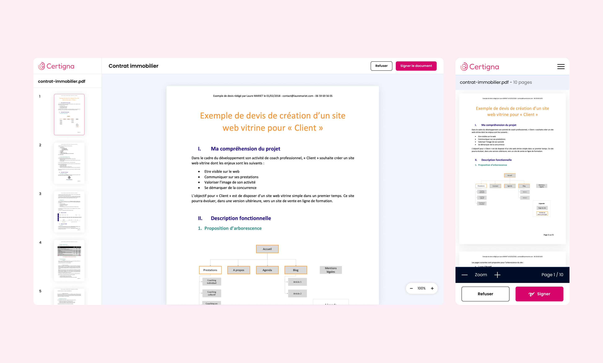
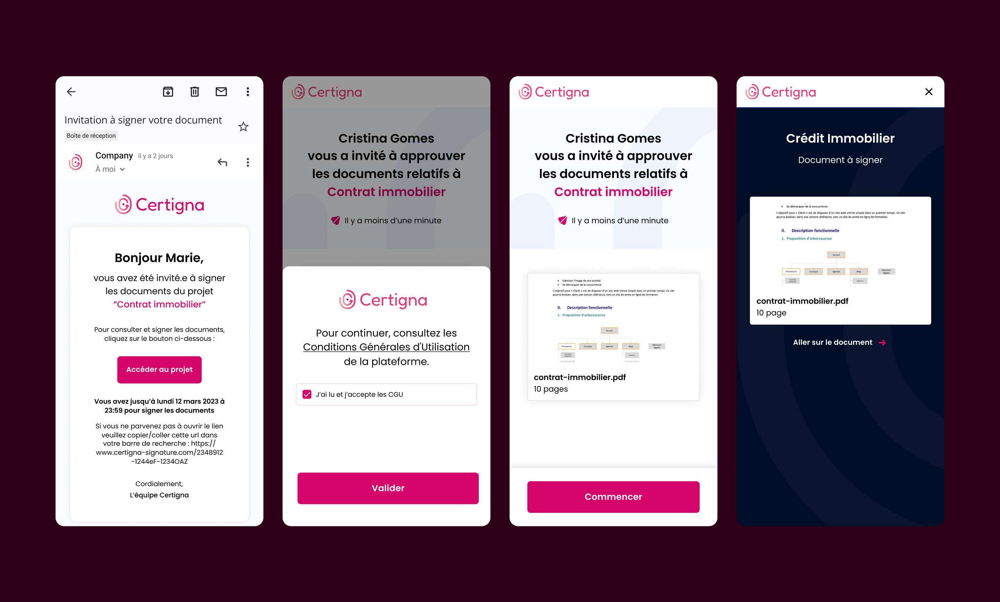
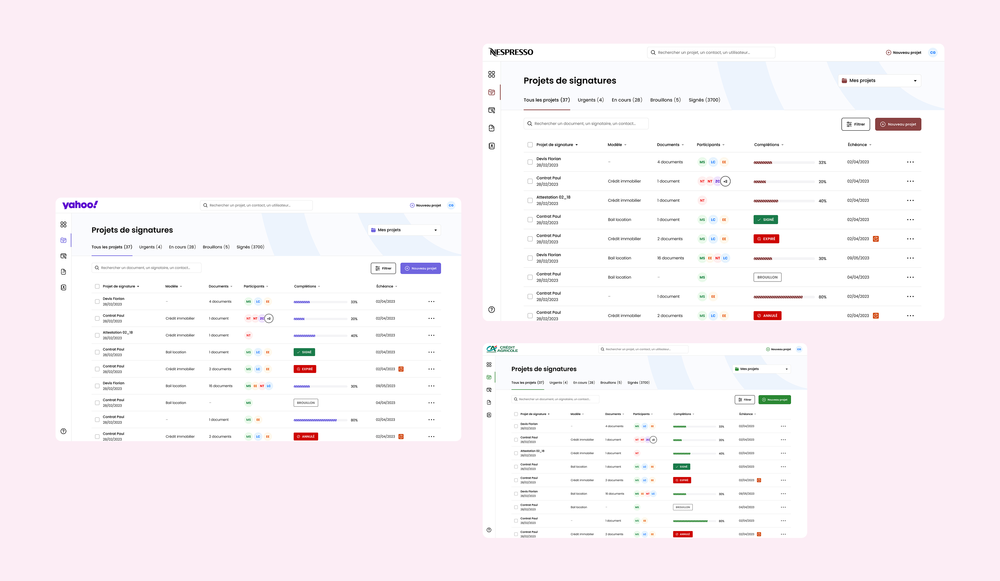
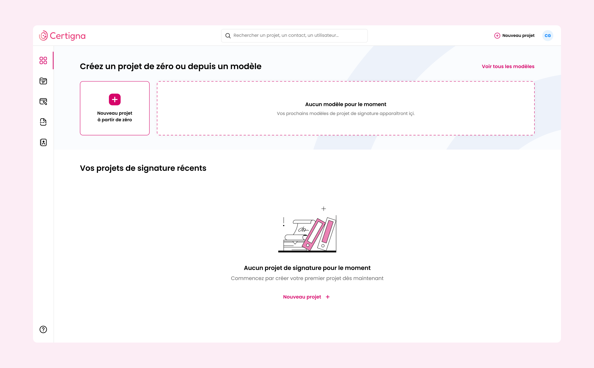
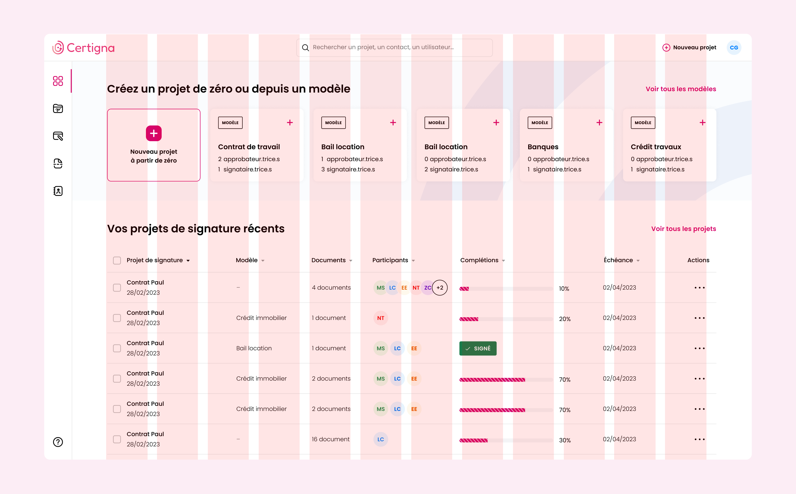
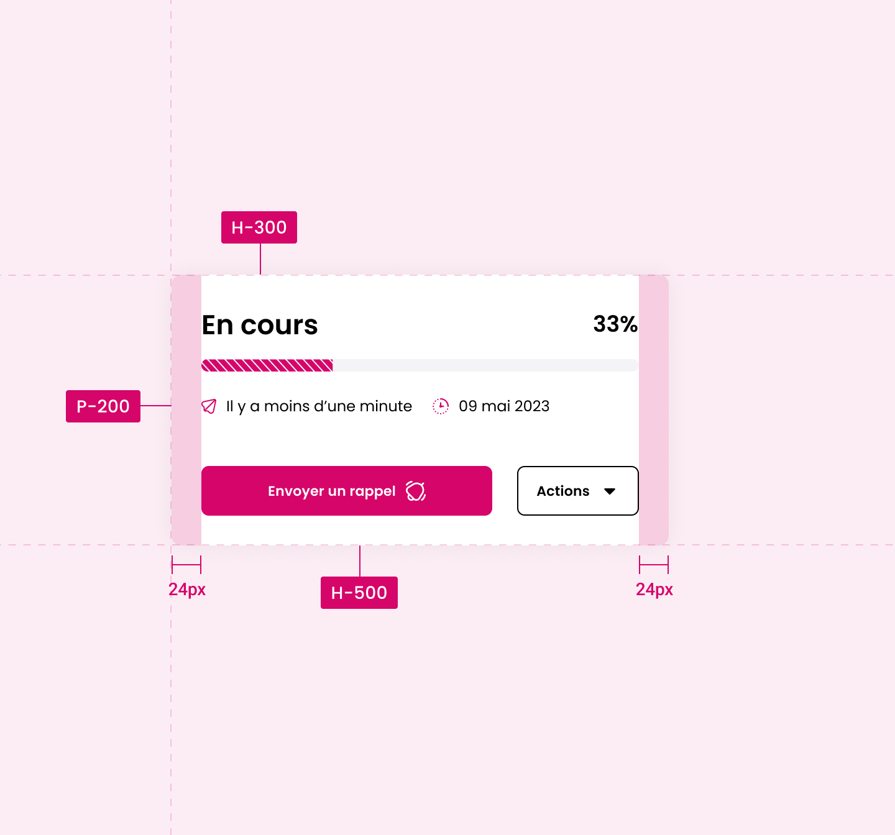
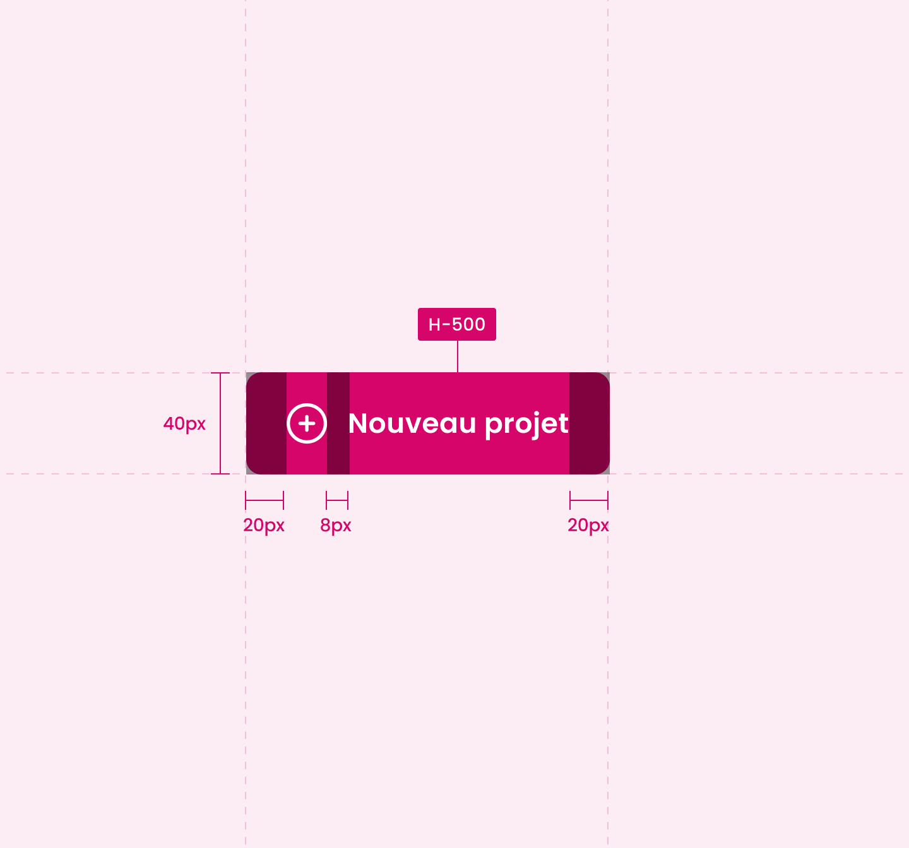

Signature en ligne Online Signing
Dans un marché ultra-concurrentiel, j'ai accompagné Certigna pour concevoir leur nouvelle solution de signature électronique personnalisée. L'enjeu était de combler un retard stratégique en un temps record, tout en créant une expérience fluide qui humanise et simplifie un processus légal souvent perçu comme rigide et complexe.
In a highly competitive market, I worked with Certigna to design their new personalised electronic signature solution. The challenge was to close a strategic gap in record time, while creating a smooth experience that humanises and simplifies a legal process often perceived as rigid and complex.





Défis UX & Méthodologies
Concevoir un produit de confiance dans l'urgence a nécessité une approche pragmatique et focalisée sur les points de friction critiques.
Designing a trusted product under pressure required a pragmatic approach focused on critical friction points.
Continuité cross-device Cross-device continuity
Le défi majeur résidait dans la rupture de canal. J'ai orchestré le flux utilisateur entre la signature sur desktop et la vérification d'identité sur mobile (KYC), en m'assurant que la transition soit fluide, sécurisante et sans perte de contexte pour éviter le churn. The main challenge was channel discontinuity. I orchestrated the user flow between desktop signing and mobile identity verification (KYC), ensuring a smooth, reassuring transition with no loss of context to prevent churn.
Recherche utilisateur en mode commando Commando user research
Malgré des délais très courts, j'ai maintenu une phase de Guerilla Testing et d'interviews utilisateurs. Cela nous a permis d'identifier les freins psychologiques liés à la signature électronique et de valider nos hypothèses de parcours en temps réel. Despite very tight deadlines, I maintained a Guerilla Testing and user interview phase. This allowed us to identify psychological barriers to electronic signing and validate our journey hypotheses in real time.
Design émotionnel & Identité Emotional design & Identity
J'ai décliné l'identité de Certigna au sein de l'interface pour renforcer la légitimité du service. L'enjeu était de trouver le juste équilibre entre une esthétique moderne et les codes rassurants de la cybersécurité. I adapted Certigna's identity within the interface to reinforce the service's legitimacy. The challenge was finding the right balance between a modern aesthetic and the reassuring codes of cybersecurity.
Prototypage itératif Iterative prototyping
Pour accélérer la production sans sacrifier la qualité, j'ai travaillé par itérations rapides via des User Flows détaillés et des prototypes haute fidélité. Cette méthode a permis d'aligner instantanément les parties prenantes et de fournir des specs prêtes pour le développement (Hand-off). To accelerate production without sacrificing quality, I worked through rapid iterations using detailed User Flows and high-fidelity prototypes. This instantly aligned stakeholders and delivered development-ready specs (hand-off).



